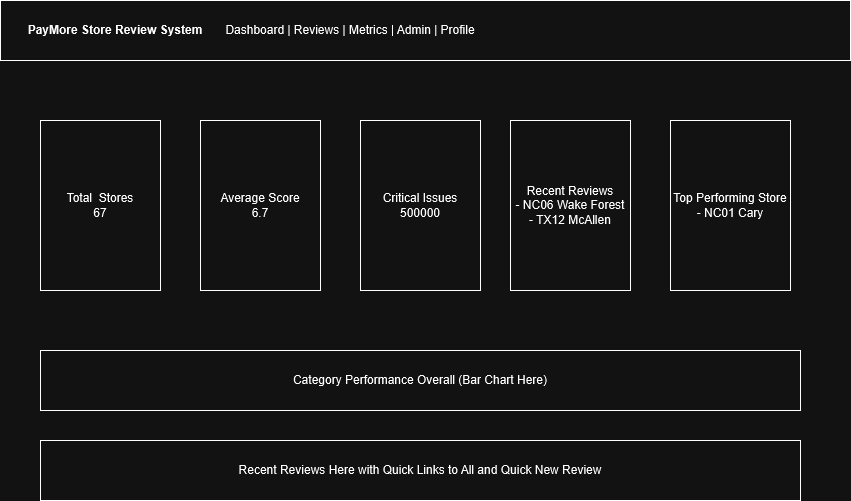
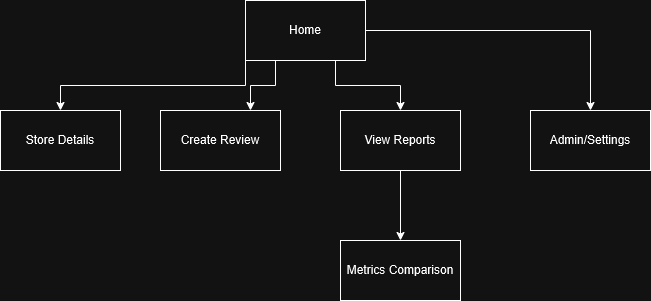

Project Overview: PayMore Store Review System
Project Description
The PayMore Store Review System is a web application that assists Corporate Support members in conducting structured store audits using a digital scorecard. Reviewers can rate predefined operational categories such as Front of House, Back of House, Buying Processes, and Customer Interactions, add contextual notes, and upload before and after photos directly within the system. The application automatically calculates category scores and overall ratings, eliminating manual errors and ensuring consistency across evaluations.
The system also supports performance tracking over time. Key store metrics such as sales, conversion rates, and customer engagement can be compared between initial reviews and follow-up evaluations, allowing management to measure improvement and operational impact. The long-term goal is to replace manual spreadsheet-based reviews with a scalable, centralized platform.
Check Spreadsheet for User and Password
Intended Users
- Corporate Support members (full access)
- Franchisees (access limited to their assigned stores)
- Store Managers (access limited to their assigned stores)
Content Overview
- Store review scorecards with category-based ratings
- Written evaluator notes for each review item
- Before and after photo uploads for visual documentation
- Category summaries and overall performance ratings
- Store-specific report pages
- Metrics comparison data (pre- and post-review performance)
- Interactive dashboards displaying store performance trends
Client Information
- Client: Wesley Swaney
- Title: Director of Support
- Organization: PayMore Group
- Email: [private]
- Phone: [private]
Wireframe

Site Map

Page Design
Home / Dashboard
- Purpose: Provide an overview of store performance and quick access to key features.
- Users: All users
- Content:
- Summary cards: Total Stores, Average Score, Critical Issues, Recent Reviews, Top Performing Store
- Category performance bar chart
- Recent reviews list with quick links to view all reviews and create a new review
- User Input: No
- Validation: None
- Links/Buttons: Navigation links to all pages; quick link to Create Review
- Actions: Navigate to Create Review or View Reports
Create Review
- Purpose: Allow Corporate Support users to conduct and submit store evaluations.
- Users: Corporate Support
- Content:
- Store select dropdown
- Review date field
- Category rating sections (Front of House, Back of House, Buying Processes, Customer Interactions)
- Notes input fields per category
- Before and after photo upload inputs
- User Input: Yes
- Validation: Notes input fields (required, length check); photo uploads (file type and size validation)
- Links/Buttons: Submit Review, Save Review (draft)
- Actions: Automatically calculates category and overall scores on input; submits or saves the review
View Reports
- Purpose: Display completed reviews and allow filtering and searching.
- Users: Corporate Support (all stores); Franchisees and Managers (assigned stores only)
- Content:
- List of completed reviews
- Filter controls by store, date range, and reviewer
- User Input: Yes (filter/search inputs)
- Validation: Ensure valid filter selections before applying
- Links/Buttons: Search bar, dropdown filters, clickable report links, link to Metrics Comparison
- Actions: Filter and search review list; click a report to navigate to Store Details
Store Details
- Purpose: Display detailed results for a specific store review.
- Users: Corporate Support, Franchisees, Managers
- Content:
- Review scores by category
- Evaluator notes per category
- Before and after photo gallery
- Overall performance rating
- User Input: No
- Validation: None
- Links/Buttons: Back to Reports, link to Metrics Comparison for this store
- Actions: Acts as the main report page for a completed review
Metrics Comparison
- Purpose: Show performance changes over time for a selected store.
- Users: Corporate Support, Store Admins
- Content:
- Pre- and post-review metrics (sales, conversion rate, customer engagement)
- Charts and graphs displaying improvement trends
- User Input: Yes (store select dropdown)
- Validation: Ensure a valid store is selected before loading data
- Links/Buttons: Store select dropdown, date range selector
- Actions: Load and display comparison charts for selected store and time range
- Notes: Focused on improvement tracking between initial and follow-up evaluations
Admin / Settings
- Purpose: Allow administrators to configure the review system.
- Users: Corporate Support
- Content:
- Category management (add, edit, remove review categories)
- Scoring threshold configuration
- User Input: Yes
- Validation: Input validation for all settings fields
- Links/Buttons: Forms, toggles, Save/Update buttons
- Actions: Update system configuration and scoring rules
Dynamic Functionality
Review Score Calculation
- Page: Create Review
- Function: Automatically calculates category scores and the overall review score in real time as the reviewer enters ratings.
- Purpose: Eliminates manual calculation errors and provides immediate feedback during the review process.
- Example: Google Forms (form input and response collection structure)
Real-Time Category Summary Updates
- Page: Home / Dashboard and View Reports
- Function: Dynamically updates category averages and performance summaries as new review data is loaded or entered.
- Purpose: Provides instant feedback and keeps dashboards current without a page reload.
- Example: Tabler Admin Template (JavaScript-driven dashboard with live updating widgets)
Filtering and Search
- Page: View Reports
- Function: Allows users to filter the review list by store, date range, and reviewer using dropdown menus and a search bar.
- Purpose: Improves usability and navigation for users managing large numbers of reviews.
- Example: Tabler Admin Template (filterable data tables)